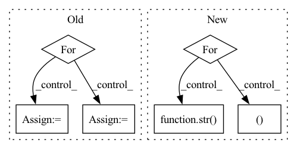

Pattern ID :37830
Before Change
// with tqdm(dataset, desc="Test{}".format(str(epoch)), total=len(dataset), leave=True) as test_epoch:
with torch.no_grad():
for idx, (X_test, Y_test, dia, sys, mean) in enumerate(test_epoch):
hypothesis = model(X_test, scaler=scaler)
"""Negative Pearson Loss"""
rmse_cost = loss[0](hypothesis, Y_test)
// neg_cost = 0
"""STFT Loss"""
stft_cost = loss[1](hypothesis, Y_test)
"""DBP Loss"""
// d_cost = loss[0](pred_d, dia)
"""SBP Loss"""After Change
with tqdm(dataset, desc="Test{}".format(str(epoch)), total=len(dataset), leave=True) as test_epoch:
with torch.no_grad():
for idx, (X_test, Y_test, dia, sys, size_class) in enumerate(test_epoch):
hypothesis = model(X_test, scaler=scaler)
avg_cost_list, cost = tu.calc_losses(avg_cost_list, loss,
hypothesis, Y_test,
idx + 1)
total_cost = np.sum(avg_cost_list)
temp = {}
for i in range(len(loss)):
temp[(str( loss[i])) [:-2]] = (round(avg_cost_list[i], 3))
test_epoch.set_postfix(losses=temp, tot=total_cost)
if plot_flag:In pattern: SUPERPATTERN
Frequency: 3
Non-data size: 6
Instances Fragment ID: 108562536
Project Name: tvs-ai/pytorch_rppgs
Commit Name: 79fa5ea2fc22ff76197fc5272382574b54608880
Time: 2023-01-02
Author: forownsake@gmail.com
File Name: vid2bp/test.py
M Class Name: AnonimousClass
N Class Name: AnonimousClass
M Method Name: test(6)
N Method Name: test(5)
M Parent Class:
N Parent Class:
M File Name: vid2bp/test.py
N File Name: vid2bp/test.py
M Start Line: 53
M End Line: 84
N Start Line: 61
N End Line: 91
Before Change
// with tqdm(dataset, desc="Test{}".format(str(epoch)), total=len(dataset), leave=True) as test_epoch:
with torch.no_grad():
for idx , (X_test, Y_test, dia, sys, mean) in enumerate(test_epoch):
hypothesis = model(X_test, scaler=scaler)
"""Negative Pearson Loss"""
rmse_cost = loss[0](hypothesis, Y_test)
// neg_cost = 0
"""STFT Loss"""
stft_cost = loss[1](hypothesis, Y_test)
"""DBP Loss"""
// d_cost = loss[0](pred_d, dia)
"""SBP Loss"""After Change
with tqdm(dataset, desc="Test{}".format(str(epoch)), total=len(dataset), leave=True) as test_epoch:
with torch.no_grad():
for idx , (X_test, Y_test, dia, sys, size_class) in enumerate(test_epoch):
hypothesis = model(X_test, scaler=scaler)
avg_cost_list, cost = tu.calc_losses(avg_cost_list, loss,
hypothesis, Y_test,
idx + 1)
total_cost = np.sum(avg_cost_list)
temp = {}
for i in range(len(loss)):
temp[(str( loss[i])) [:-2]] = (round(avg_cost_list[i], 3))
test_epoch.set_postfix(losses=temp, tot=total_cost)
if plot_flag: Fragment ID: 108562537
Project Name: tvs-ai/pytorch_rppgs
Commit Name: 79fa5ea2fc22ff76197fc5272382574b54608880
Time: 2023-01-02
Author: forownsake@gmail.com
File Name: vid2bp/test.py
M Class Name: AnonimousClass
N Class Name: AnonimousClass
M Method Name: test(6)
N Method Name: test(5)
M Parent Class:
N Parent Class:
M File Name: vid2bp/test.py
N File Name: vid2bp/test.py
M Start Line: 53
M End Line: 84
N Start Line: 61
N End Line: 91
Before Change
// with tqdm(dataset, desc="Test{}".format(str(epoch)), total=len(dataset), leave=True) as test_epoch:
with torch.no_grad():
for idx , (X_val, Y_val, dia, sys, mean) in enumerate(valid_epoch):
hypothesis = model(X_val, scaler=scaler)
"""Negative Pearson Loss"""
rmse_cost = loss[0](hypothesis, Y_val)
// neg_cost = 0
"""STFT Loss"""
stft_cost = loss[1](hypothesis, Y_val)
"""DBP Loss"""
// d_cost = loss[0](pred_d, dia)
"""SBP Loss"""After Change
with tqdm(dataset, desc="Validation{}".format(str(epoch)), total=len(dataset), leave=True) as valid_epoch:
with torch.no_grad():
for idx , (X_val, Y_val, dia, sys, size_class) in enumerate(valid_epoch):
hypothesis = model(X_val, scaler=scaler)
avg_cost_list, cost = tu.calc_losses(avg_cost_list, loss,
hypothesis, Y_val,
idx + 1)
total_cost = np.sum(avg_cost_list)
temp = {}
for i in range(len(loss)):
temp[(str( loss[i])) [:-2]] = (round(avg_cost_list[i], 3))
valid_epoch.set_postfix(losses=temp, tot=total_cost)
// wandb.init(project="VBPNet", entity="paperchae") Fragment ID: 108562538
Project Name: tvs-ai/pytorch_rppgs
Commit Name: 79fa5ea2fc22ff76197fc5272382574b54608880
Time: 2023-01-02
Author: forownsake@gmail.com
File Name: vid2bp/validation.py
M Class Name: AnonimousClass
N Class Name: AnonimousClass
M Method Name: validation(5)
N Method Name: validation(5)
M Parent Class:
N Parent Class:
M File Name: vid2bp/validation.py
N File Name: vid2bp/validation.py
M Start Line: 29
M End Line: 58
N Start Line: 31
N End Line: 53
Before Change
total_batches = 0
start = time.time()
for e in range(self.train_config.epochs):
epoch_loss, epoch_reg, batches = self._train_epoch(e, loader)
results["epoch_losses"].append(epoch_loss)
results["epoch_regularizations"].append(epoch_reg)
total_batches += batches
if self.verbose:
print("{}. Epoch {} Loss: {:8.3f}; Regularization: {:8.3f}".format(
e + 1, self.loss_func_name, epoch_loss, epoch_reg))After Change
loader (torch DataLoader): instantiated Training Dataloader (with TimeDataset)
start = time.time()
for e in range(self.train_config.epochs):
self._train_epoch(e, loader)
if self.verbose:
print(e, "Epoch", [str( metric) for metric in self.metrics])
if self.verbose:
print("Train Time: {:8.4f}".format(time.time() - start)) Fragment ID: 108562533
Project Name: ourownstory/neural_prophet
Commit Name: ea05689f7ccca059223f80c7bd85f8b7943e69d0
Time: 2020-06-16
Author: oskar.triebe@merantix.com
File Name: neuralprophet/neural_prophet.py
M Class Name: NeuralProphet
N Class Name: NeuralProphet
M Method Name: _train(2)
N Method Name: _train(2)
M Parent Class:
N Parent Class:
M File Name: neuralprophet/neural_prophet.py
N File Name: neuralprophet/neural_prophet.py
M Start Line: 277
M End Line: 302
N Start Line: 274
N End Line: 284